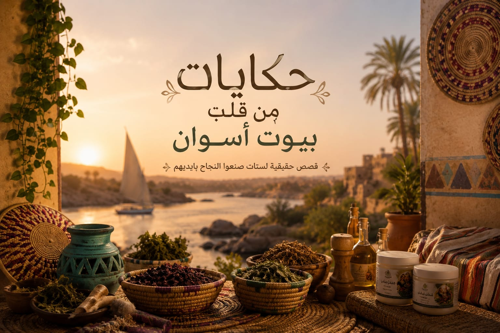

قصة ملهمة
رحلة أمل بدأت من البيت… ووصلت إلى كل يد
قصة أ. فاطمة في غرب أسوان، من زراعة الحنّة والكركديه داخل البيت إلى منتج طبيعي 100% وصل بجودة عالية وتغليف يليق به.
هذه الصفحة مخصصة لعرض قصص حقيقية عن سيدات من أسوان، بصورهن وتجاربهن وكلماتهن التي تستحق أن تُروى.

بدأت من البيت… ووصلت إلى كل يد
قصة فاطمة
تعرفوا على قصة فاطمة
قصة أ. فاطمة في غرب أسوان، من زراعة الحنّة والكركديه داخل البيت إلى منتج طبيعي 100% وصل بجودة عالية وتغليف يليق به.
ملخص القصة
في غرب أسوان، حيث تتحول البساطة إلى قوة، تبدأ حكايتنا مع أ. فاطمة… سيدة قررت ألا تنتظر الفرصة، بل أن تصنعها بنفسها.
من مساحة صغيرة داخل منزلها، بدأت رحلتها بزراعة الحنّة والكركديه 🌺🌿 زرعت بيديها، ورعت بصبرها، وتابعت نموهما يومًا بعد يوم حتى أصبحا محصولًا حقيقيًا أمام عينيها.
ولم تتوقف رحلتها عند الزراعة، بل واصلت الطريق… فقطفت النباتات، وجفّفتها، وفرزتها بعناية، محافظةً على جودتها الطبيعية بنسبة 100% دون أي إضافات كيميائية.
ومع دعمنا، وصلنا معًا إلى أفضل أساليب التغليف والتعبئة، لتخرج منتجاتها بشكل يليق بجودتها، ويعكس قيمة ما بذلته من جهد.
رسالة أ. فاطمة لكل سيدة:
إن البداية يمكن أن تنطلق من البيت، وأن الشغف والإرادة يصنعان نجاحًا حقيقيًا.
القصص
يمكنك إضافة المزيد من القصص هنا بنفس التصميم: غلاف، نص، ثم معرض صور صغير يدعم القصة.

قصة رحاب من قرية سلوى قبلي بأسوان، من العمل داخل البيت إلى التوريد الشهري والمشاركة في المعارض خارج أسوان.
تفاصيل القصة
في قرية سلوى قبلي بأسوان، حيث العادات والتقاليد ترسم ملامح الحياة، اختارت رحاب أن ترسم لنفسها طريقًا مختلفًا… لم تنتظر الظروف أن تتغير، بل قررت أن تغيّرها بنفسها.
بدأت رحاب رحلتها من داخل منزلها، لكن بعقلية سيدة ترى الفرصة في أبسط الأشياء. قامت بالتعاقد مع مزارعين في قريتها، وحصلت منهم على محاصيل الملوخية والبامية الطازجة 🌱
لكن رحلتها لم تتوقف عند الشراء… بل بدأت مرحلة الإبداع الحقيقي: قامت بتجهيز المحاصيل، وتجفيفها بعناية، وتطبيق عمليات ما بعد الحصاد بدقة وجودة عالية، حتى وصلت إلى منتج نهائي مميز: ملوخية وبامية مجففة بجودة طبيعية عالية 🍃🍂
ولم تكتفِ رحاب بالإنتاج فقط، بل أدركت أن النجاح الحقيقي يحتاج إلى سوق. فبحثت وتحركت ونجحت في التعاقد مع أحد العطارين في قريتها، ثم توريد منتجاتها بشكل شهري ومنتظم.
ثم وسّعت حلمها أكثر، وشاركت في معارض كبيرة كانت نقطة تحول في رحلتها. من أسوان إلى محافظات مختلفة، وصلت منتجاتها إلى عملاء في محافظات متعددة.
أثر الحكاية
نجاح رحاب لم يكن مجرد مشروع، بل تحول إلى مصدر دخل ثابت وساهم بشكل واضح في تحسين مستوى معيشة أسرتها.
رسالة رحاب
أن التحدي لا يُكسر بالعادات، بل بالإرادة والعمل.
أرسل القصة والصور، ونرتبها لك بنفس الأسلوب: غلاف قوي، نص جميل، ومعرض صور مرتب.


{kind=link}
{kind=link}
{kind=link}
{kind=link}
{kind=link}